Bunea
LUT
Kreative Lut

Comparison View

Video Limiter Effekt --> 90 IRE

10 IRE Limit


SAFE AREAS EBU
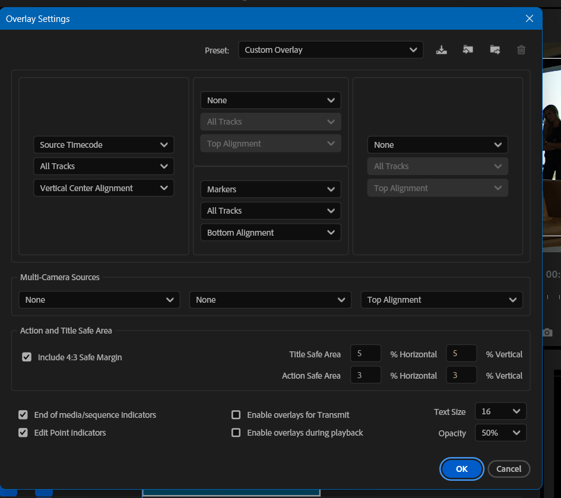

Proxy Medien Erstellen


Adjustment Layers

LUT

Gesicht - korrekt beleuchtet

Farbe - Weißer Trinkbehälter als Referenz


Kontrast erhöht

Sekundär korrektur

Hemd:
Masken 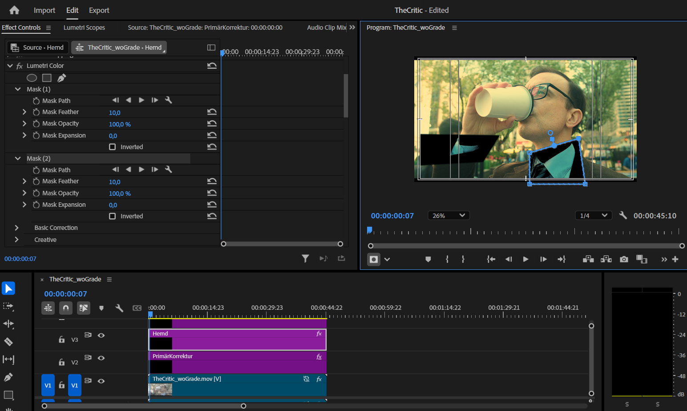


Gesicht:
invertierte maske auf sekundär korrektur

mit keyframes gesicht getrackt
Konsolidation und Transkoridierung

Export:

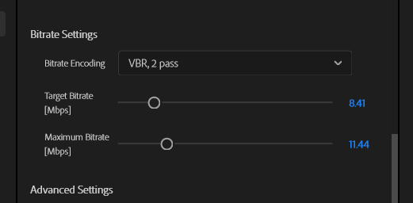
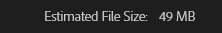
einstellungsebenen nach Einstellungen
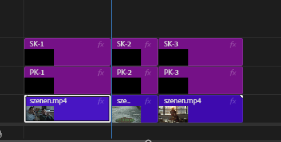

Video Limiter um 5 95 IRE Bereich einzuhalten
Weißabgleich Kontrolle pro Einstellung
mit temperature und tint korrigiert
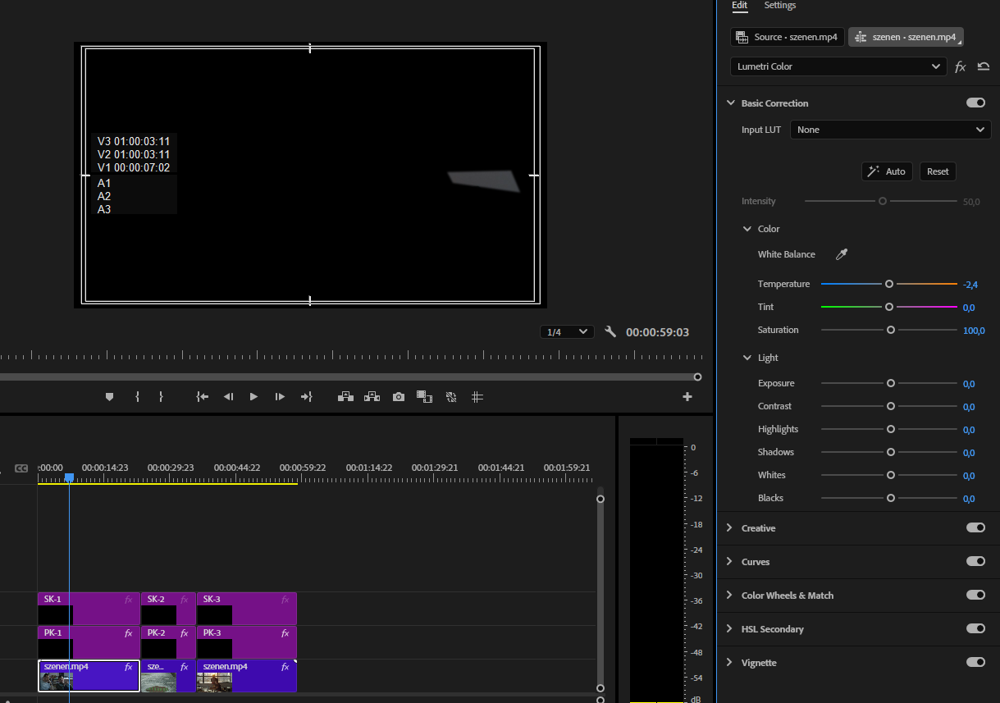

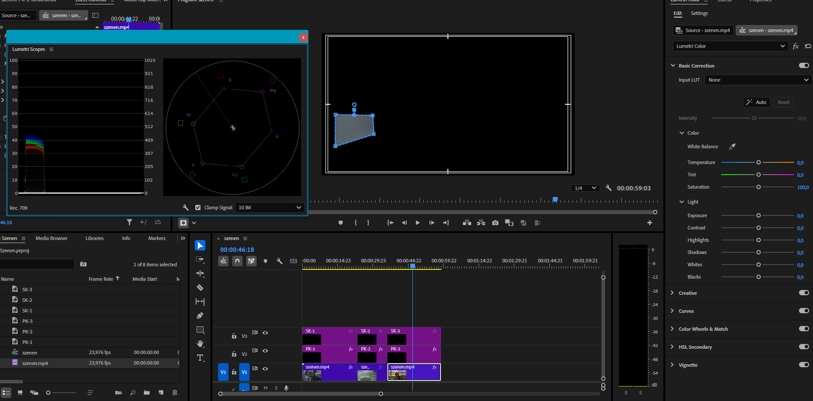
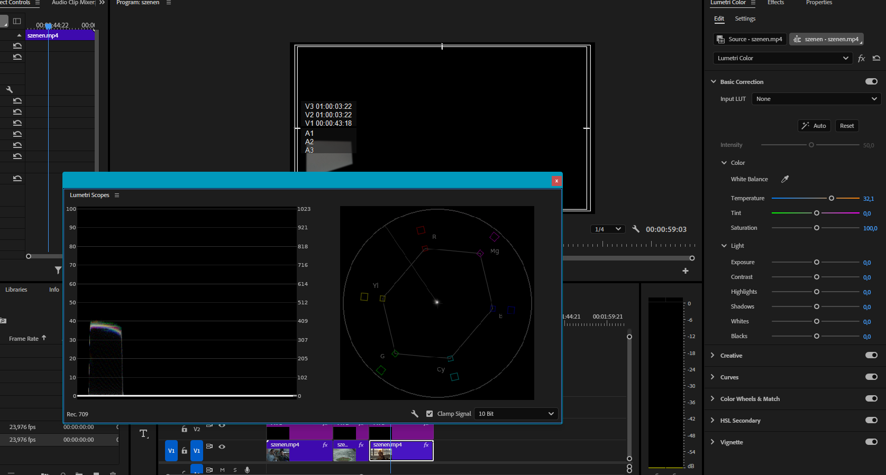
PK Einstellung 1
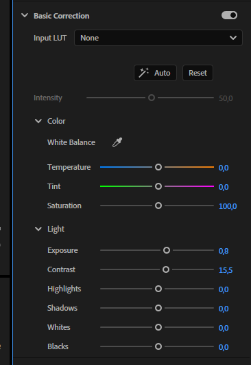
SK Einstellunn 1
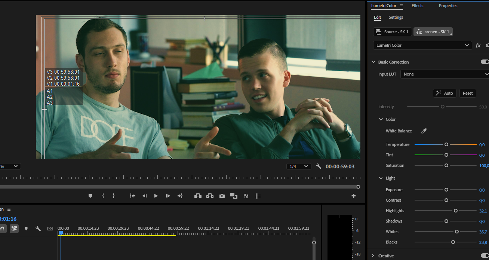

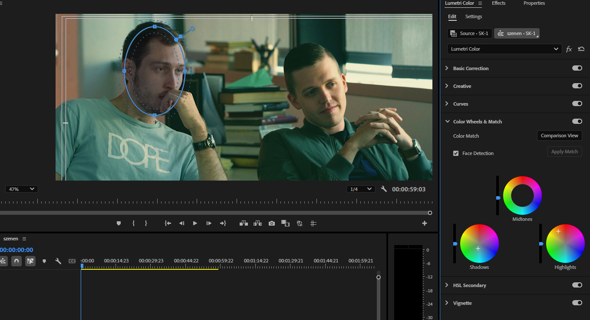
PK Einstellung 2
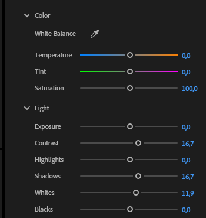
SK Einstellung 2
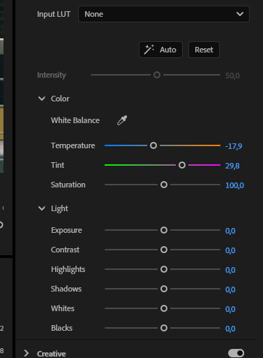

PK Einstellung 3

SK Einstellung 3
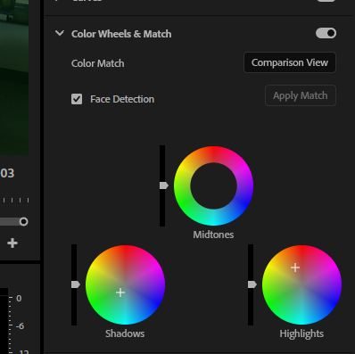
Export


Primär korrektur
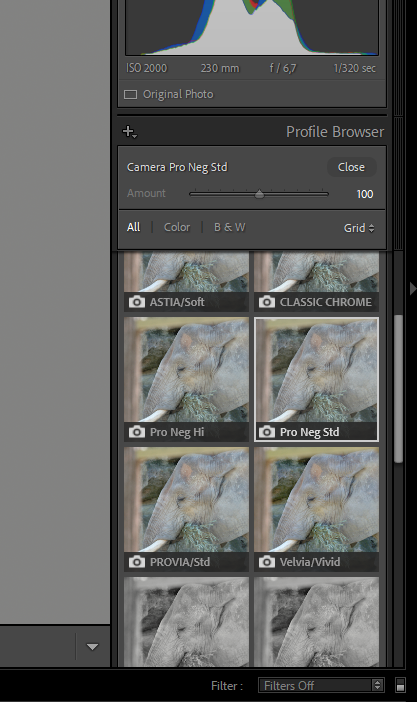
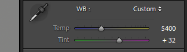 Weißabgleich mit Pipette
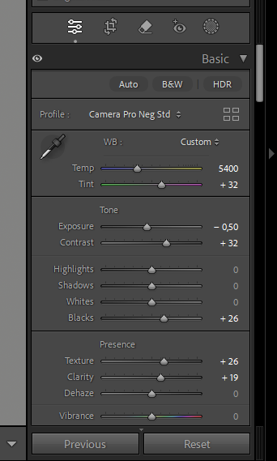
sharpening

denoise mit AI Funktion von LRC

Profile Corrections
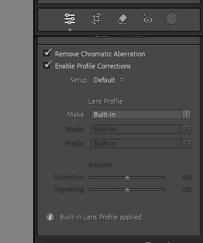

Color Grading
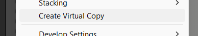
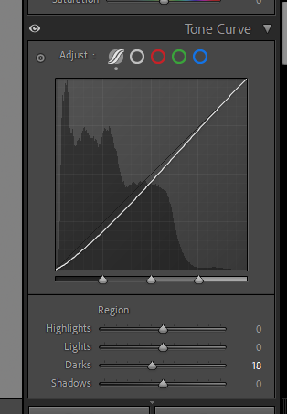


export jpg, sRGB
Primär Korrektur


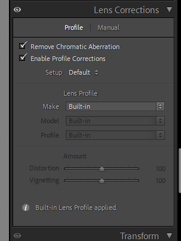
SekundärKorrektur
entfernung vom Stein


kontrast erschaffen

sky mask


linear gradient

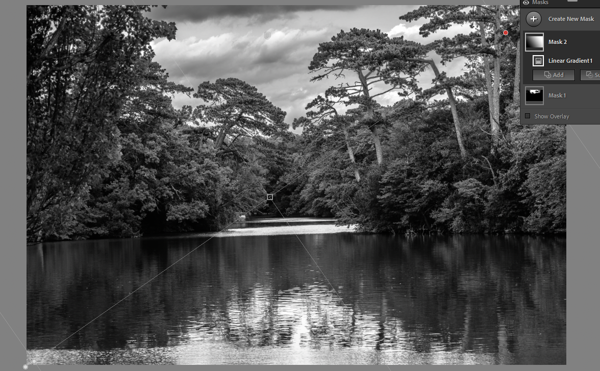

Brush Mask


vignette

körnung
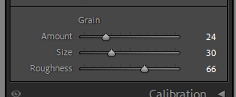

export jpg, sRGB